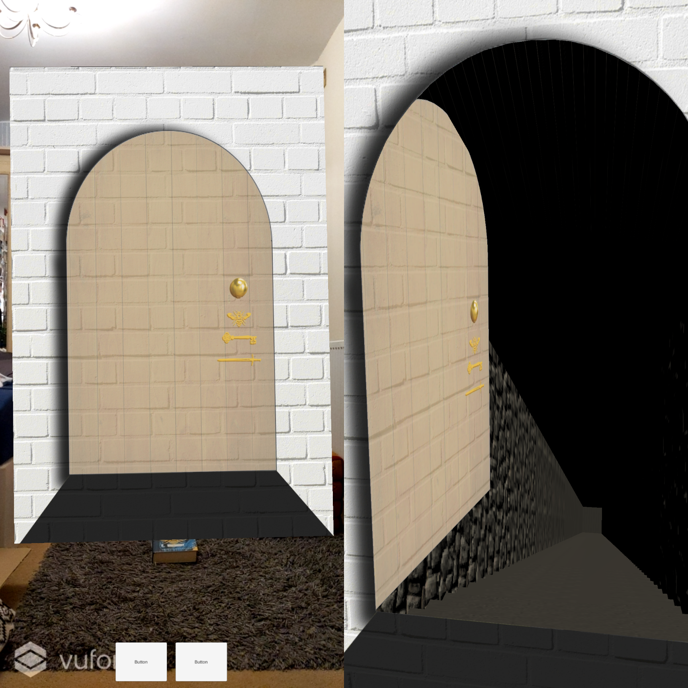
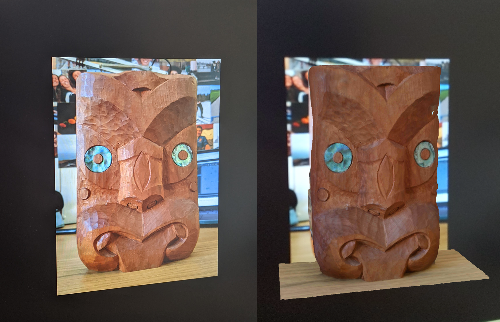

Small Projects using the Vuforia Engine
The Vuforia Engine can be used within unity to make AR apps that find image or area targets and determine the position and rotation of virtual elements based on them. I made a couple of small projects with Vuforia to learn how it works and explore its possibilities.
One of my favourite books is “Starless Sea” by Erin Morgenstern. It is about a secret second world that is filled with books and imagination. One of the book’s characters has the ability to paint doors in the real world which lead into that other world. I made a small prototype of how a door like this could look in an AR app. It lets you ‘scan’ the book with your phone, which makes a painted door appear. when you approach it, it opens up and reveals the staircase to a different world.
For another app I used photogrammetry to create a 3D model of one of my carving projects. I then created a small AR app that would show off the created 3D model when the the phone camera was pointed at an image of the carving.